Systematic Assessment of Children’s Odia Handwriting Legibility
Outline of the presentation
Introduction
Situates the research within design research, defines its key terms, and introduces handwriting acquisition and assessment in the lower primary years, the Odia script, and the initial objectives of the study.
Situating the current research
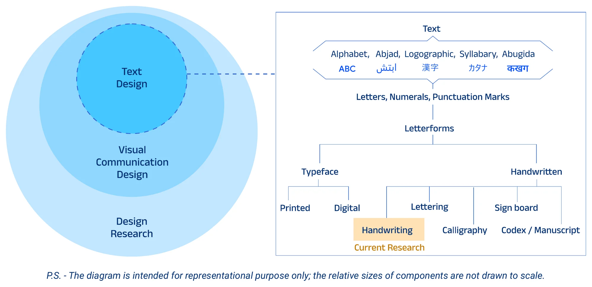
Definitional premise
- Write verb
- An act of marking letters, words, or symbols on a surface to communicate information. (Oxford Advanced Learner’s Dictionary)
- Handwriting proficiency
- The overall level of an individual’s handwriting skill, encompassing both the written product (legibility) and the writing process (such as speed and fluency). For children in the early stages of handwriting acquisition, legibility serves as its primary indicator.
- Handwriting process
- The dynamic, cognitive–motor activity involved in producing written text using tools like a pen or pencil through hand and finger movements, rather than typing. (Puyjarinet et al., 2024)
- Handwriting quality
- A general term for the evaluated characteristics of the handwritten product, including legibility as well as features such as neatness and overall appearance.
- Handwriting product
- The characteristic style of the output of the handwriting process of a particular person in the form of a visible trace on paper or screen. (Semeraro et al., 2019)
- Legibility
- The extent to which each individual character in a text can be identified with ease. (Lust and Donica, 2011; Schneck and Amundson, 2010; Tarasov et al., 2015)
- Stroke
- The smallest continuous movement of a writing instrument that produces a visible mark without lifting the pen or pencil. (Zhang, 2024)
- Readability
- The characteristic of a written product that determines how easily and effectively readers can interpret, comprehend, and extract meaning from it. (Beier et al., 2022; Crossley et al., 2022)
Handwriting acquisitionFeder & Majnemer, 2007; Foulin, 2005; Kshirsagar, 2018; Stevenson & Just, 2014; Tripathy and Dey, 2024
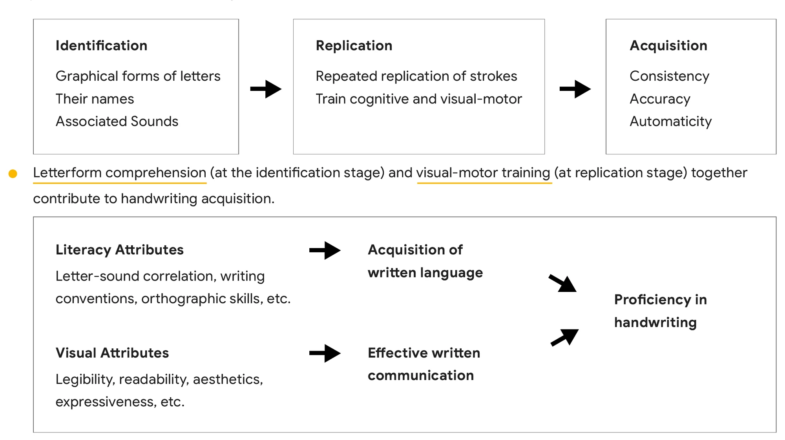
Why handwriting acquisition matters
- Writing demands exhaustive visual-motor involvement and stroke-by-stroke consideration, which improves children’s visual recognition of letterforms more than learning by sight or typing alone (Bara and Gentaz, 2011).
- The ability to write letterforms affects word-orthographic and early spelling skills and compositional quality, and is closely tied to broader academic achievement (Berninger et al., 2006; Christensen, 2007; Medwell and Wray, 2007; Baker et al., 2016; Puranik and AlOtaiba, 2012).
- Handwriting is a developmental requirement alongside reading, speaking, basic mathematics and science (Gosse et al., 2018, 2021; Gosse and Van Reybroeck, 2020).
- Acquisition in the native script equips children to participate in regional education systems and keeps them close to their culture (Sayyed et al., 2024; Tortorelli et al., 2022). NEP 2020 advocates native languages as the medium of instruction at least until Grade 5 (Ministry of Education, 2020).
- Different scripts make different learning demands because of the complexity and variety of their character forms and writing conventions (Kshirsagar, 2018).
Handwriting assessment in the lower primary years
- At ages 5–7, instruction focuses on producing legible and neat text (Barnett et al., 2018).
- Children’s handwriting first evolves in product attributes such as legibility and readability; process attributes such as speed emerge in later grades (ages 8–10) with neuromotor maturation (Sassoon et al., 1989).
- Measuring process attributes at ages 5–7 is therefore unreliable, and legibility of the written output is a practical and sufficient indicator of proficiency (Medwell et al., 2009).
- Teacher feedback helps learners recognise handwriting issues and adjust to improve legibility (Hattie and Timperley, 2007).
- Feedback rests on structured assessment: instruction provides practice, while assessment guides instructional focus (Denton et al., 2006).
Product over process
For children aged 5–7, handwriting proficiency = legibility of letterforms
For later grades, handwriting proficiency includes legibility, readability, speed and other process factors.
Global-holistic and analytic evaluations
| Global-holistic evaluations | Analytic evaluations |
|---|---|
| Handwriting is evaluated on general appearance. | Handwriting is evaluated on fixed parameters. |
| Samples are compared to benchmark specimens. | A letter-by-letter analysis is conducted. |
| A single rating covers several legibility parameters collectively. | Distinct ratings are given for individual legibility parameters. |
| No explicit feedback on specific handwriting issues. | Each legibility issue is addressed with precise feedback. |
| Wisconsin scale, Ayres’s median time method, Freeman’s handwriting scale | Minnesota Handwriting Test, Hebrew Handwriting Evaluation (HHE), Evaluation Tool for Children’s Handwriting (ETCH) |
| Ayres 1912; Larsen and Hammill 1989; Phelps and Stempel 1988; Barnett et al. 2018; Amundson 1995; Molfese et al. 2011 | Helwig et al. 1976; Collins et al. 1980; Jones et al. 1977; Reisman 1993; Erez and Parush 1999 |
Overview of the Odia script
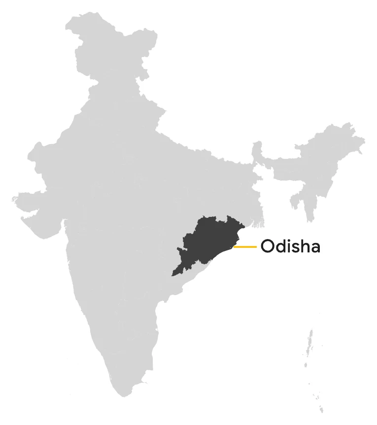
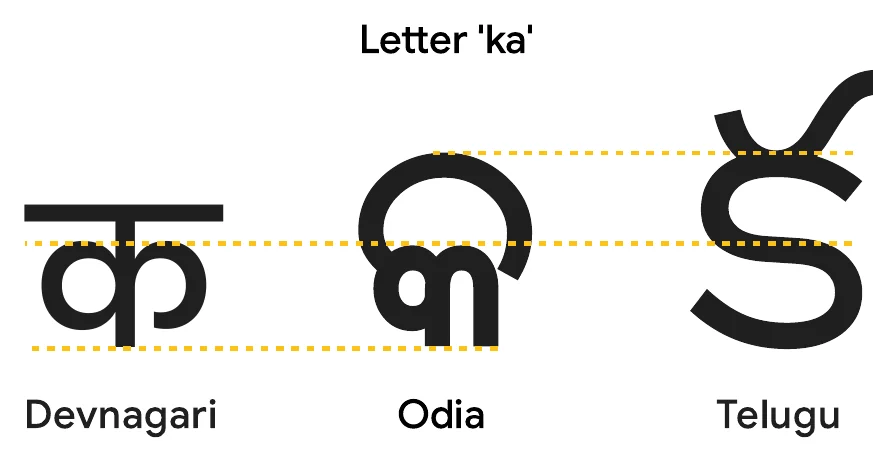
Odia script features
- Left-to-right writing system
- Alpha-syllabic, or abugida
Evolution of the Odia scriptDaniels, 2019; Mahapatra, 1977; Palai, 2021; Ramanujan and Weekes, 2019; Tripathi, 1962
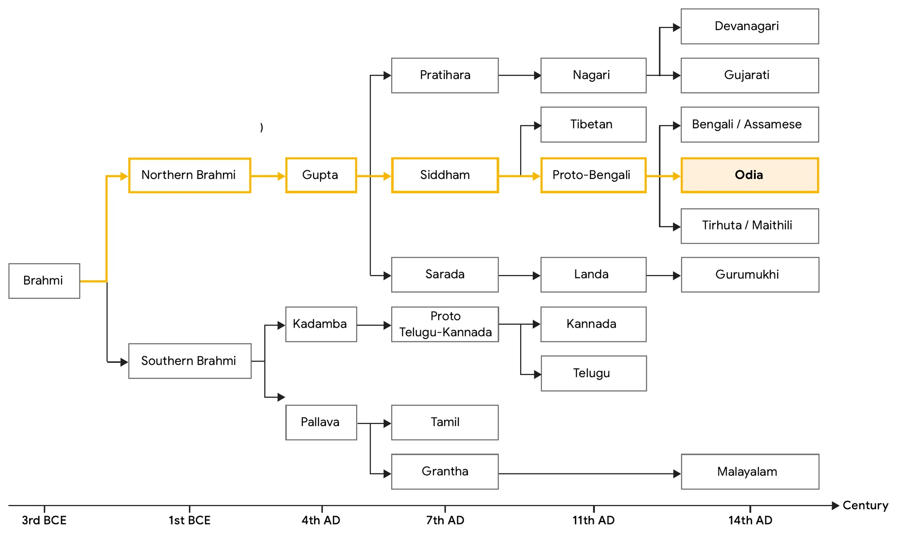
Distinctive features of Odia letterforms
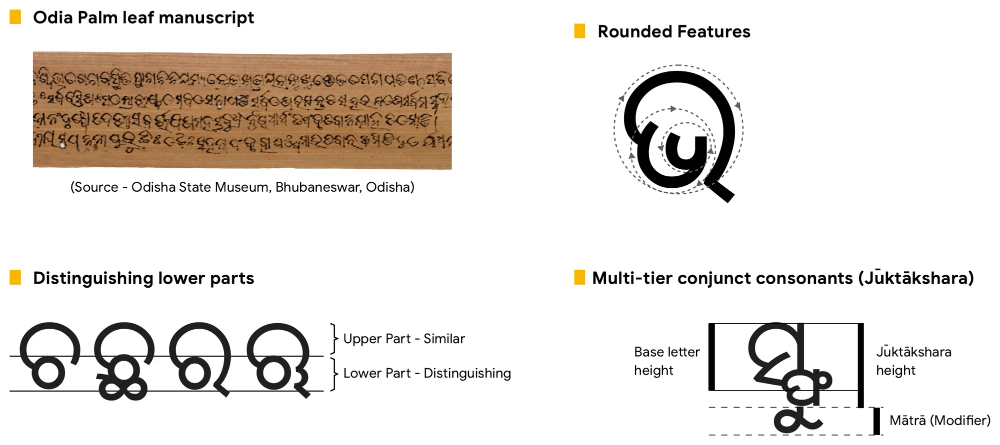
Rounded features
Rooted in palm-leaf writing with a stylus, where straight horizontal strokes would tear the leaf.
Distinguishing lower parts
Upper parts are often similar; the lower part identifies the letter. ଚ ଛ ର ଋ
Multi-tier j̄uktāksharas
Conjunct consonants stack below the base letter, adding height beyond the base letter and the mātrā.
Broad research gaps
- Systematic typographic investigations of Odia letterforms remain limited, with few studies addressing their structural and legibility-related dimensions.
- Studies of structural parameters for designing Odia typefaces, such as structure, joinery, spacing, width, grid and tonality (Mohanty, 1986, 1998), did not account for the script’s multi-layered writing system, particularly j̄uktāksharas (conjunct consonants) and mātrās (vowel markers).
- Attempts at guidelines, character groupings and anatomical features (Das, 2015; Patjoshi and Sreekumar, 2022) leaned heavily on concepts borrowed from the Latin script.
- Little effort has connected typographic research with how Odia handwriting is taught, assessed, or developed, leaving no standardised instructional or assessment practice.
- Classroom assessment of Odia handwriting is therefore prone to subjective impressions of legibility rather than objective criteria.
Initial objectives
The review of handwriting acquisition, assessment methods and tools, and the Odia script revealed gaps in typographic understanding of Odia legibility and its use in analytic assessment. Three initial objectives guided a focused literature review.
To understand the visual and structural features of Odia letterforms that contribute to legibility
To identify the legibility parameters of children’s Odia handwriting
To formulate an analytic assessment method for the Odia handwriting of children aged 5–7 years
Literature review
Based on the initial research objectives, a narrowed-down literature review was conducted to understand how letterforms are recognised and what makes them legible, how legibility is measured, how handwriting is assessed with existing tools in Latin and non-Latin scripts, and what research exists on handwriting in Indic scripts, particularly Odia.
Legibility
Legibility denotes the extent to which each individual character in a text can be identified with ease.
Lust and Donica, 2011; Schneck and Amundson, 2010; Tarasov et al., 2015
This makes legibility fundamentally tied to the process of pattern recognition.
Atkinson’s model of memoryAtkinson and Shiffrin, 1968
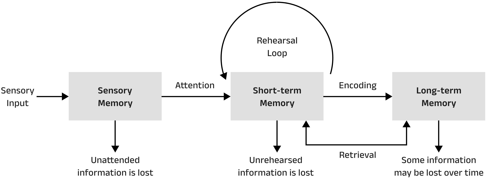
Recognising a letter depends on extracting its visual features and matching them with stored representations. The model explains why legibility rests on both the clarity of the written form and the strength of the reader’s and writer’s mental representation of the letter.
For children learning Odia, incomplete representations in long-term memory weaken both recognition and reproduction of letterforms, linking the model to the stages of handwriting acquisition and to the letter recognition process used later in this research.
Letterform identification theoriesBeier, 2009
| Template matching theory | Feature detection theory | |
|---|---|---|
| Core idea | Recognition compares visual input with stored whole-image templates in long-term memory. | Recognition decomposes patterns into smaller features and matches them with stored features. |
| Approach | Top-down: perception guided by prior knowledge and stored mental images. | Bottom-up: perception builds from individual features to whole forms. |
| Advantages | Intuitive model based on prior exposure; explains why repeated exposure improves familiarity. | Explains adaptability across variations where essential features remain identifiable. |
| Limitations | Cannot explain handling of immense variability in letter shapes; becomes rigid. | Needs higher-order semantic or contextual mechanisms when letterforms share features. |
| Key contribution | Opened discussion on intrinsic morphological components; highlighted overall template similarity. | A flexible framework for recognising letters via distinct features; fed semiotic and typographic analyses. |
| Examples | Common letter skeleton, form and counter-form | Role hypothesis, semiotic analysis of letterforms |
Letterform identification theories
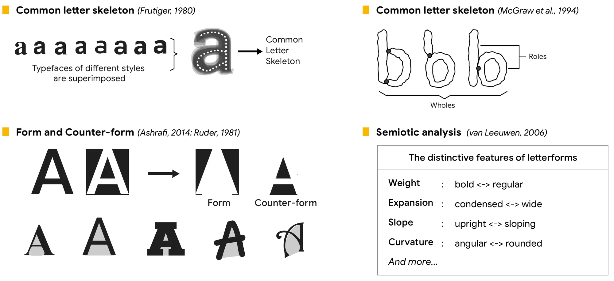
Methods to measure legibility
| Basis | Method | Description | Strength | Limitation | Applications |
|---|---|---|---|---|---|
| Performance | Reading speed | Total time or words per minute, aloud or silently | Functional, easy to use; indicates fluency | Affected by familiarity, text difficulty, skill; low sensitivity to small differences | Typeface comparison for continuous reading |
| Error rate | Misreadings, omissions, substitutions or comprehension errors | Sensitive to recognition accuracy at letter/word level | Influenced by word frequency, syntax, motivation | Stroke width, letter spacing, stylistic features | |
| Threshold visibility | Perceptual limits under restricted exposure, distance, size, contrast | Reveals recognition thresholds | Isolated words/letters; familiarity influences results | Signage, small print, low-light displays | |
| Physiological | Blink rate | Frequency of eye blinks during reading | Non-intrusive; visual comfort and fatigue | Affected by lighting, humidity, health; broad | Prolonged screen reading |
| Eye-tracking | Fixations, saccades, regressions | Micro-level evidence of visual processing | Specialised equipment; linguistic complexity | Font choices in apps and websites | |
| EEG | Neural activity capturing cognitive load | Reveals perceptual and cognitive effort | Equipment-intensive; not specific to legibility | Immersive media (AR/VR/MR) |
Why typeface legibility methods do not transfer to handwriting
Variability is intrinsic
Typefaces keep stable, reproducible forms; handwritten letters vary with every reproduction, and more so in young learners with developing fine motor control and orthographic knowledge.
Scripts are shaped by writers
Writing systems evolved under the motor abilities of the writer as well as the perceptual demands of the reader (Unger, 2012).
Classrooms are not laboratories
Eye trackers and EEG demand technical expertise, specialised infrastructure, and substantial time for data collection and analysis.
Handwriting assessment tools in the Latin script
| Tool | Administration tasks | Assessment parameters | Strength | Limitations |
|---|---|---|---|---|
| Transparent Overlay Method (Helwig et al., 1976) | Sample compared to specimen letters on transparent sheets | Shape, size, slant (fit within 1–3 mm boundary) | Early analytic approach; separates typographic features | Not sensitive to personal style variations |
| CHES (Phelps and Stempel, 1987) | Copy a sentence “in usual style” on unruled paper | Form, spacing, rhythm, tilt, general appearance (10-point Likert; total 100) | Diagnostic focus on learning disabilities; moderate–high reliability | Debate over LD diagnosis vs general proficiency |
| BHK (Hamstra-Bletz et al., 1987) | Copying standardised text on unruled paper | Size, margin, alignment, spacing, collision, height, distortion, ambiguity, corrections | Widely validated; strong psychometrics; detects dysgraphia | Requires careful rater training |
| MHA (Reisman, 1999) | Standardised sentence copying | Legibility, form, alignment, size, spacing, speed | Norm-referenced percentiles; digitised version adds objectivity | Limited outside norm sample; cultural/economic bias |
| ETCH (Amundson, 1995) | Alphabet, numerals, near/far-point copying, dictation, sentence writing | Percentage recognisability of letters, numerals, words | Comprehensive tasks; structured manual with examples | Subjectivity remains high; time-intensive |
| ML approaches (e.g., TestGraphia) | Samples on paper/tablet → feature extraction → classification | Stroke dynamics, pressure, grip, shape/spacing patterns | Objective, scalable, reduces rater bias | Non-diverse training data; infrastructure demands |
Handwriting assessment tools in non-Latin scripts
| Script | Tool | Administration tasks | Assessment parameters | Strength | Limitations |
|---|---|---|---|---|---|
| Arabic (abjad) | A-HAT (Salameh-Matar et al., 2016) | Letters from memory, paragraph copying, dictation | Recognisable characters, shape by position, joineries, spacing, size, alignment | Good construct validity; medium–high reliability | Limited cultural validation |
| Persian (abjad) | PHAT (Havaei et al., 2016) | Near-point copying, dictation | Word formation, size, space, alignment, slant, speed, orthographic mistakes | Script-specific; legibility and speed | Small-scale validation (ages 6–8) |
| Hebrew (abjad) | HHE (Erez and Parush, 1999) | All letters, story copying, dictation | Legibility, speed, errors, ergonomics (5-point Likert) | Standardised; good construct validity | Test–retest reliability not reported |
| Hanzi (logographic) | CHAS (Li-Tsang et al., 2013) | Copying (speed and accuracy) | Stroke errors: wrong, missing, additional, concatenated, reversed, sequence | Objective error categories | Focused mainly on errors |
| Hanzi (logographic) | CHLS (Lu et al., 2023) | Copying and free writing | Spacing, alignment, size uniformity, line quality, direction | Detailed legibility focus | Newer tool; needs large-scale validation |
| Hangul (syllabary) | KHA (Lee et al., 2019) | Computer-based digital input | Letter size, size CV, misalignment, inter-letter and inter-word space | Objective, rapid, precise | Needs digital infrastructure |
Handwriting research in Indic scripts
- Research on handwriting instruction or assessment in Indian scripts is very limited. As abugidas, features such as j̄uktāksharas and mātrās pose unique challenges in each Indic script (Daniels, 2019).
- Kshirsagar studied the primitive strokes children practise before writing complete Devanagari letterforms, one of the first typographic approaches to handwriting in an Indic script (Kshirsagar, 2018).
- Larger scholarly interest lies in handwritten character recognition (OCR) using NN, SVM, CNN and MLP classifiers (Singh et al., 2023).
- For Odia: an ANN recogniser using gradient features (Behera, 2012), and CNN approaches reporting about 95% accuracy (Panda et al., 2022).
- The main reason for limited research on instruction and assessment is the lack of anatomical knowledge of letterforms and of typographic studies on their legibility parameters (Kshirsagar, 2018).
Insights from the literature reviewRecognition, assessment and feedback (1–5)
Legibility can be understood through the pattern recognition processes involved in identifying letterforms, with feature detection providing a basis for more detailed, precise and analytic handwriting assessment.
Template-matching emphasises learning through conformity to subjectively established standards and may overlook the developmental variability and individual differences in children’s handwriting.
Feature detection supports an analytic approach to handwriting assessment by identifying specific visual characteristics and providing diagnostic information for children’s individual learning needs.
Handwriting is a skill that develops through practice and feedback, and needs assessment that supports continuous learning and improvement rather than only evaluating final performance.
Traditional performance-based and cognitive/physiological legibility measures give limited diagnostic information and suit the continuous, classroom-oriented needs of handwriting assessment poorly.
Insights from the literature reviewScripts, tools and validation (6–10)
Parameters such as size, proportion, alignment and spacing are common across scripts, although their measurement and influence on legibility may vary with script-specific characteristics.
Parameters based on structural or cultural norms are specific to individual scripts, so applying a tool developed for one script directly to another is inappropriate.
Most tools use copying and dictation tasks and rely on manual scoring, because automated assessment needs specific technical infrastructure and sufficiently diverse training data.
Psychometric validation of assessment tools is essential for establishing their validity, reliability, fairness and educational usefulness.
Research on handwriting legibility in the Odia script remains limited, with little systematic study of the morphology, writing norms and legibility parameters of handwritten Odia letters or their assessment.
Research design
Insights from the literature review led to four research gaps, whose practical significance was examined through three exploratory grounding studies in Odia-medium classrooms. These shaped the research objectives and questions, the researcher’s positionality, and the selection of methods that make up the research design.
Research gaps
Contextual
Indic scripts such as Odia have received little systematic attention in the wider discourse on handwriting legibility, assessment and instruction.
Theoretical
Limited exploration of the anatomy of Odia letterforms has prevented script-specific frameworks linking anatomical features to visual recognition.
Empirical
No systematic evidence documents the normative handwriting conventions in Odia, so legibility standards cannot be defined or development compared.
Methodological
There is no validated, analytic, script-specific tool for assessing Odia handwriting legibility, so classroom assessment rests on subjective judgement of general appearance.
Exploratory grounding studies to examine the practical significance of research gaps
This phase examined the real-world significance of the gaps by investigating how Odia handwriting is taught, evaluated and perceived in classrooms. Three exploratory studies were each guided by a working hypothesis derived from the gaps.
Odia handwriting proficiency significantly influences Odia-speaking children’s overall academic functioning. Contextual gap
Evidence: descriptive survey data from teachers
There is a lack of alignment between the ways Odia handwriting is taught and the ways it is assessed in Odia-medium primary classrooms. Theoretical & methodological gaps
Evidence: group discussions with teachers; instructional and assessment materials
Children’s handwriting exhibits marked variation in letter formation and legibility, arising primarily from incomplete comprehension of Odia letterforms. Empirical gap
Evidence: analysis of children’s handwriting samples
The working hypotheses guided exploratory inquiry, not formal statistical testing. The aim was not to establish causal or generalisable claims, but to examine whether the gaps in the literature were reflected in classroom practice.
H1: Odia handwriting proficiency influences children’s overall academic functioningStudy at a glance
Working hypothesis H1: Odia handwriting proficiency significantly influences Odia-speaking children’s overall academic functioning.
- Participants
- 77 teachers of Odia as a first language in government and private Odia-medium schools; 5–25 years of experience
- Sampling
- Purposive sampling
- Data collection
- Self-administered bilingual (English–Odia) digital questionnaire; 5-point Likert scale from Strongly Disagree (1) to Strongly Agree (5)
- Instrument
- Part A: academic impact of handwriting. Part B: classroom observations of handwriting-related behaviour. Statements were worded negatively, so disagreement indicates that handwriting matters.
- Analysis
- Descriptive statistics: means, standard deviations and percentage distributions
Exploring H1: teachers’ responsesPart A · academic impact
Exploring H1: teachers’ responsesPart B · classroom observations
Exploring H1: what the responses suggest
- Across the attitudinal statements in Part A, teachers consistently disagreed with the negatively worded statements; they do not see handwriting proficiency as academically insignificant.
- Some behavioural statements in Part B drew neutral or context-dependent responses; the others showed clear disagreement.
- Together, Parts A and B indicate that teachers perceive handwriting proficiency as carrying considerable academic weight and that current instruction and assessment may not adequately address early handwriting challenges.
Teachers perceive Odia handwriting proficiency as a significant influence on children’s academic functioning. As this rests on a descriptive analysis of teachers’ perceptions, not inferential testing or direct measurement of academic performance, it is read as exploratory evidence. It still underlines the need for continued pedagogical attention to handwriting.
H2: Instructional and assessment practices in Odia handwriting are not alignedStudy at a glance
Working hypothesis H2: There is a lack of alignment between the ways Odia handwriting is taught and the ways it is assessed in Odia-medium primary classrooms.
- Participants
- 10 primary school teachers with more than 5 years of experience teaching Odia handwriting
- Data collection
- Group discussion on instructional approaches and focus; review of government-issued and widely used commercial handwriting practice books; teacher-evaluated handwriting samples
- Analysis
- Instructional and assessment practices documented, compared and analysed for alignment
Exploring H2: instructional practices
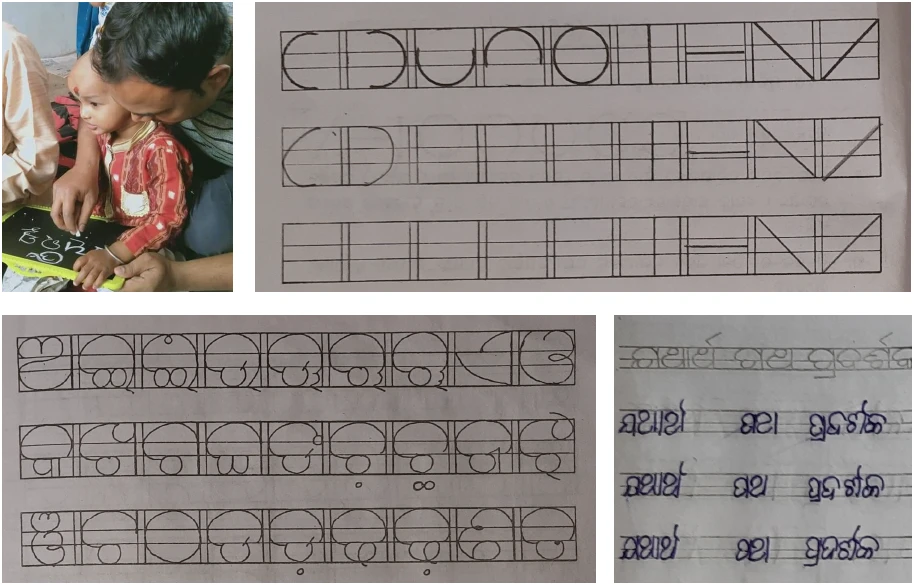
- The primitive strokes children practise before full letterforms are largely derived from Latin-script conventions.
- Distinctive structural features of Odia are not taught explicitly; children infer them through repetition.
- Letters in practice books follow common digital or print typefaces, whose shapes do not always match the movements and norms of handwritten Odia.
- Instruction supports gradual progression but lacks a script-appropriate foundation for accurate, structurally informed, fluent handwriting.
Exploring H2: assessment practices
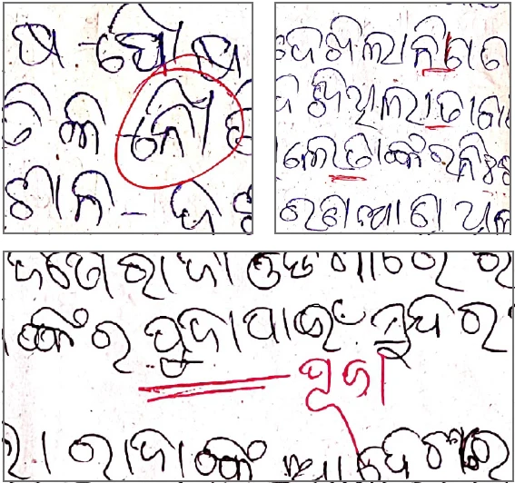
- Teachers evaluate handwriting quality and spelling but receive no formal or structured guidelines on how to assess handwriting.
- Without institutional frameworks or scales, they rely entirely on personal judgement, leading to variable marking and feedback.
- Assessment is done by the class teacher alone, with no cross-checking by other teachers.
- A single pedagogical lens may introduce bias and limits balanced, multi-criterion assessment.
Exploring H2: what the observations suggest
- Correlating instruction with assessment shows a notable misalignment: the inputs children receive do not match the standards applied to their handwriting.
- Teachers assess criteria that are not systematically taught; children are assessed on skills they may not have been guided to develop.
- Subjective marking compounds the problem, causing inconsistent evaluation and missed handwriting difficulties.
Given their qualitative and exploratory nature, these observations are indicative rather than conclusive. They point to the need for standardised assessment frameworks and structured feedback so that instruction supports children’s development.
H3: Variation in children’s letter formation and legibility arises from incomplete letterform comprehensionStudy at a glance
Working hypothesis H3: Children’s handwriting exhibits marked variation in letter formation and legibility, arising primarily from incomplete comprehension of Odia letterforms.
- Participants
- 171 children in Grades 1–2 (Mage = 5.46, SD = 0.57) from two Odia-medium schools in Bargarh and Subarnapur districts
- Sampling
- Convenience sampling; written consent from headmasters and parents
- Data collection
- Children wrote the key letter ‘ଷ’ in ଚାଷ (basic form) and ପୁଷ୍ପ (j̄uktākshara form) on unruled paper; sessions supervised by their teacher and video recorded
- Analysis
- Stroke sequences categorised and counted following Kshirsagar and Poovaiah (2015)
Exploring H3: stroke-order types of ‘ଷ’
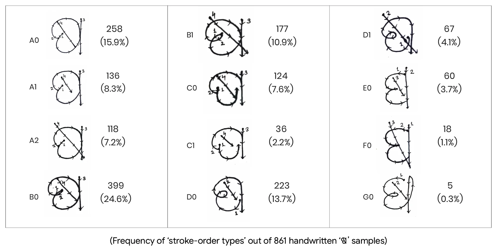
Each visual representation was sketched and categorised following Kshirsagar and Poovaiah (2015). Type B0 was the most frequent (24.6%), followed by A0 (15.9%) and D0 (13.7%).
Exploring H3: what the stroke orders suggest
- The wide range of stroke orders observed is consistent with H3.
- Variations across stroke types are closely tied to children’s developing and often incomplete internalisation of Odia letterforms.
- Structural inaccuracies, distortions and inconsistent segmentation of strokes are behavioural evidence of incomplete letterform comprehension.
Weak mental representations of Odia letterforms may affect the legibility of children’s handwriting. Drawn from a contextual sample with interpretive analysis, the findings are exploratory rather than generalisable.
Together, the three exploratory studies gave preliminary empirical grounding to the research gaps identified in the literature.
From initial to final research objectives
The research gaps and the exploratory grounding studies made it essential to revisit the initial objectives (Section 1.8). They gave a broad direction at the outset, but a deeper understanding of the gaps called for greater analytical specificity.
The second objective was divided into two: identifying legibility parameters needed both the educational criteria teachers use in evaluation and the normative features of legible Odia handwriting perceived by readers. Splitting it let these complementary but conceptually different dimensions be examined independently.
Research objectives and questions
Researcher’s positionality
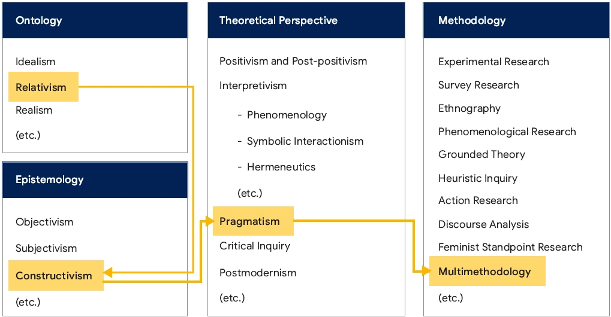
- Ontology
- Relativism
- Epistemology
- Constructivism
- Perspective
- Pragmatism
- Methodology
- Multimethodology
Articulated with Crotty’s framework (1998) as expanded by Creswell (2013). The framework has been adapted by several scholars examining legibility and letterforms in a typographic context (Ashraf, 2014; Bachfischer, 2007; Cahalan, 2004).
Selecting methods for RQ1Anatomical studies of letterforms in other scripts
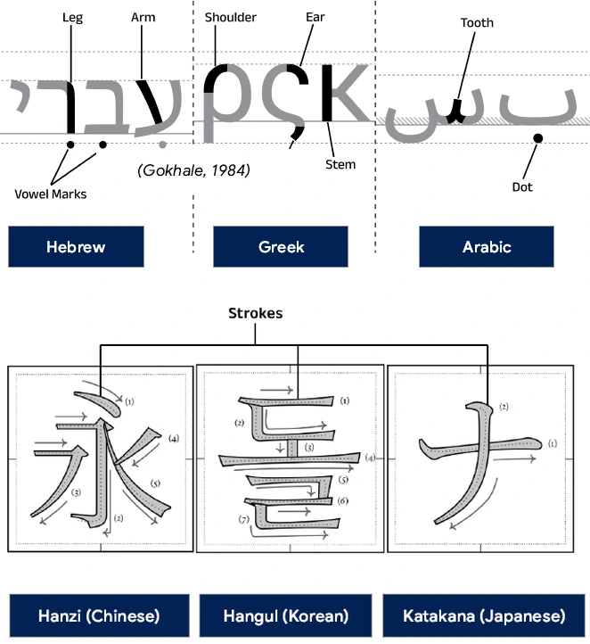
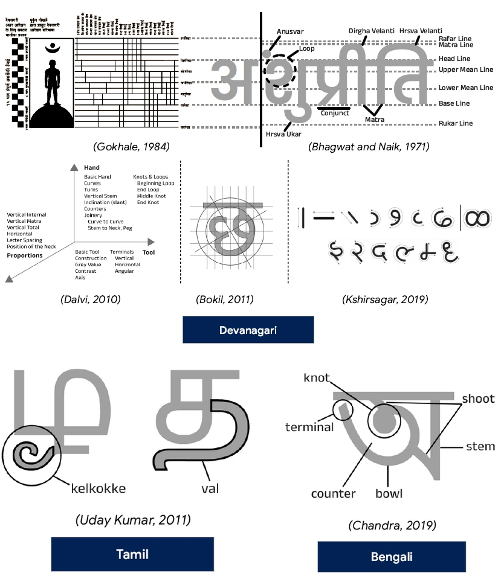
Selecting methods for RQ1The basis of letterform anatomy across scripts
| Script | Origin | Writing system | Anatomy based on |
|---|---|---|---|
| Greek | 8th c. BCE | Alphabetic | Palaeographic studies |
| Tamil | 3rd c. BCE | Abugida | Epigraphic studies |
| Hebrew | 2nd c. BCE | Abjad | Palaeographic studies |
| Hanzi (Chinese) | 3rd c. BCE | Logographic | Calligraphic studies |
| Kanji (Japanese) | 4th c. AD | Logographic | Calligraphic studies |
| Arabic | 4th c. AD | Abjad | Calligraphic studies |
| Hangul (Korean) | 12th c. AD | Logographic | Calligraphic studies |
| Devanagari | 12th c. AD | Abugida | Graphical analysis |
| Bengali | 12th c. AD | Abugida | Semiotic analysis |
Semiotic analysis
Like Odia, Bengali descends from Proto-Bengali and is an abugida. Its anatomy was derived through semiotic analysis (Chandra et al., 2015), the method adopted for Odia letterforms in this research.
Selecting methods for RQ2Understanding teachers’ subjective assessment parameters
| Study | Script / context | Methodology | Data collection | Analysis | Focus |
|---|---|---|---|---|---|
| Jameel et al. (2016, 2020) | Urdu, Latin | Quantitative | Survey through questionnaire | Exploratory factor analysis | Legibility components |
| Javid & Lahij (2012) | Persian | Quantitative | Survey through questionnaire | Single-variable t-test | Product and process components |
| Hammerschmidt & Sudsawad (2004) | English (USA primary schools) | Quantitative | Survey through questionnaire | Descriptive statistics | Product and process components |
| Fajariani et al. (2025) | Indonesian schools | Qualitative | Semi-structured interviews | Inductive content analysis | Psychological factors |
| Kapamba & Mwanza (2024) | Zambia (Grade 5) | Qualitative | Structured interviews | Thematic analysis | Environmental factors |
| Kazybay et al. (2025) | English (Kazakhstan) | Qualitative | Structured interviews | Thematic analysis | Compositional writing |
Selecting methods for RQ3Methods for normative studies (Costenbader et al., 2019; Mackie et al., 2015)
| Method | Methodology | Data collection | Analysis | Focus |
|---|---|---|---|---|
| Large-scale surveys | Quantitative | Questionnaires on personal views and perceived community beliefs | Multivariate statistics | Descriptive and injunctive norms |
| Social network analysis | Quantitative | Relational data on interpersonal ties | Network mapping | Norm emergence and peer influence |
| Matching-game technique | Quantitative | Incentive-compatible controlled experiments | Behavioural and statistical | Personal preference vs social expectation |
| Longitudinal / panel studies | Quantitative | Repeated observations over time | Trend analysis | Evolution or erosion of norms |
| Ethnographic / observational | Qualitative | Immersive fieldwork, participant observation | Thematic analysis | Everyday practice and implicit enforcement |
| Simple inquiry | Qualitative | Direct questioning on what is typical, acceptable and disapproved | Thematic analysis | Shared perceptions and implicit norms |
Selecting methods for RQ4Development and validation of an analytic assessment method
- Method selection followed a critical review of existing handwriting assessment tools for Latin and non-Latin scripts.
- Despite script-specific variations, core development and validation procedures are largely consistent, so similar methods were adopted for robustness and comparability.
Validation uses a quantitative approach based on standard statistical measures.
Finalised methods
How can the anatomical features of handwritten Odia letterforms be described?
Semiotic analysis
What parameters do teachers implicitly use in their subjective evaluation of children’s Odia handwriting?
Survey and exploratory factor analysis
What are the normative features of legibility in Odia handwriting?
Simple inquiry and thematic analysis
How can a valid and reliable analytic assessment method for children’s Odia handwriting legibility be developed?
Development: item selection, scale and task design · Validation: standard statistical measures
Research design for the current study
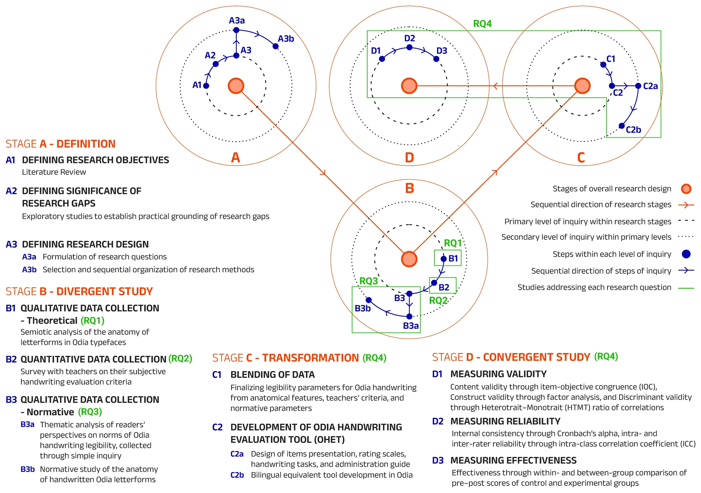
Anatomy of Odia letterforms
Addresses the first research question through a semiotic examination of Odia letterforms in four typefaces, to identify their anatomical characteristics.
Anatomy of Odia letterformsStudy at a glance
RQ1: How can the anatomical features of handwritten Odia letterforms be described?
- Material
- The complete set of Odia letterforms in four typefaces (Odia Ananta, Anek Odia, Noto Sans Oriya, Nirmala UI), selected from eight widely used typefaces
- Participants
- 20 fluent Odia readers for typeface selection (Mage = 32.26, SD = 5.76; convenience sampling); two Odia type designers who reviewed unit strokes and groupings
- Data collection
- Reading-aloud task with ratings of letter recognisability and mental workload; structural gridlines drawn across the selected typefaces
- Analysis
- Descriptive statistics for typeface selection; semiotic analysis in three stages: syntactic, syntagmatic and paradigmatic; terms translated with Brislin’s back-translation model
A semiotic approach to letterform anatomy
- Semiotics studies how meaning is generated and conveyed through signs (Shahid et al., 2015), extending letter identification from arrangement of features to their meaning-making potential.
- Typographic forms, including letter shapes and structural attributes, operate as semiotic resources through visual properties, spatial organisation and relational structures (van Leeuwen, 2006).
- Chandra et al. (2015) analysed Bengali letterform anatomy through syntactic, syntagmatic and paradigmatic analyses; this method was adopted for Odia.
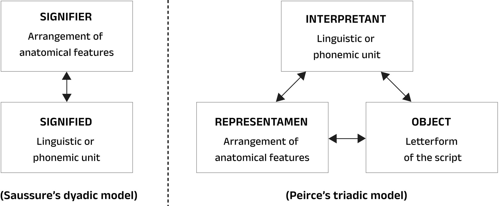
Methodology of the anatomical study
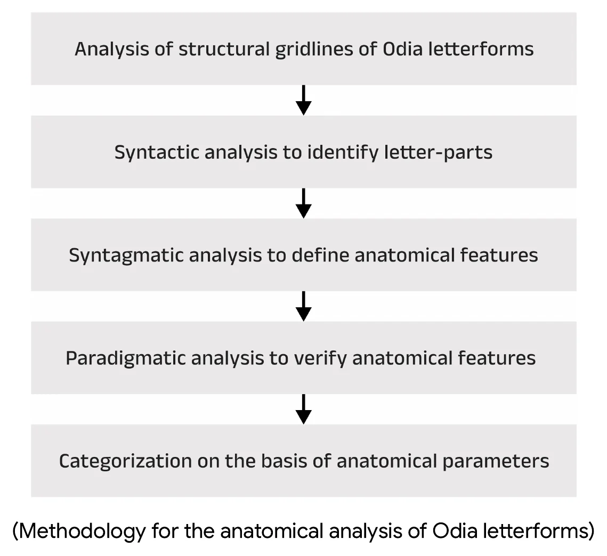
Selecting typefaces for the grid analysis
A review of Odia text in digital and print media identified eight typefaces widely used for body text. Their legibility was compared with 20 fluent Odia readers (Mage = 32.26, SD = 5.76), each reading eight paragraphs aloud, one per typeface, on a monitor under controlled conditions. The paragraph–typeface combination varied across participants, so each paragraph was read in different typefaces by different readers.
- Paragraphs from primary school storybooks, for low linguistic complexity
- Same number of words in every paragraph
- Identical font size, line spacing, reading distance and viewing angle
- Randomised order, with two-minute breaks between readings
After each paragraph, participants rated letter recognisability and mental workload on a 5-point scale (Beier, 2009). Descriptive statistics were sufficient: the aim was to identify better-performing reference typefaces for the structural analysis, not to rank them by significance or give a definitive assessment of typographic legibility.
Typefaces compared
- Anek Odia
- Noto Sans Oriya
- Baloo Bhaina
- Lohit Oriya
- Odia Ananta
- Kohinoor Odia
- Nirmala UI
- Kalinga
“Oriya” survives only in typeface names: the official name of the language changed to Odia in 2011.
Typeface legibility resultsRecognisability (higher is better)
Mean ratings on a 5-point scale; whiskers show ±1 SD.
Typeface legibility resultsMental workload (lower is better)
Mean ratings on a 5-point scale; whiskers show ±1 SD. Odia Ananta, Nirmala UI, Anek Odia and Noto Sans Oriya showed higher recognisability and lower workload.
Analysis of structural gridlines
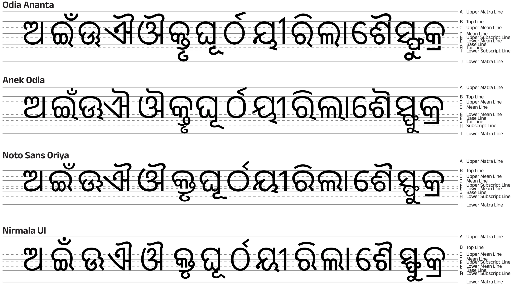
From each group of Odia letterforms (Minz, 2015; Mohanty, 1986; Nanda, 2017), the letter with the most constituent strokes was selected:
ଅ ଈ ଊ ଐ ଔ କ ଘ ଠ ୟ ର ଲ ଶ ସ
Some consonants were added with a mātrā or as j̄uktāksharas. Horizontal reference lines along recurring structural components gave common proportional zones.
Grid model proposed for Odia letterforms
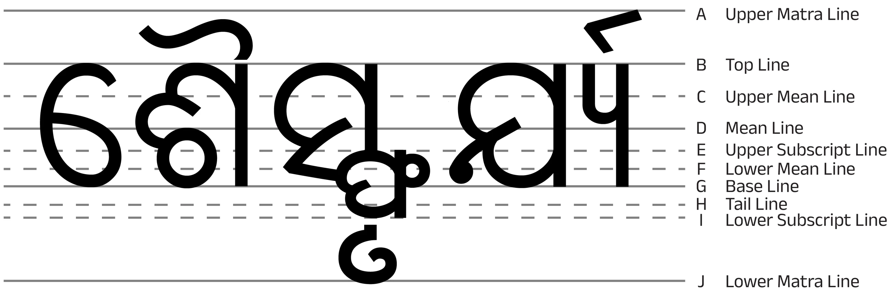
Syntactic analysis of Odia letterforms
The complete set of Odia letterforms was deconstructed into their smallest constituents, unit strokes, using Odia Ananta as the reference. Syntactic attributes of strokes were identified from literature (Das, 2015; Minz, 2015; Mohanty, 1986, 1998; Patjoshi and Sreekumar, 2022).
| Attribute | Description | Values |
|---|---|---|
| Joinery | The link between two or more strokes within a letterform | Tangent and corner joinery |
| Weight | Stroke thickness relative to letterform height | Bold, medium, light, mixed / variable |
| Orientation | Alignment of a straight stroke relative to the baseline | Horizontal, vertical, diagonal / angular |
| Curvature | Degree of curving of a stroke | Degrees of bound between initial and end points |
| Position | Vertical placement relative to the structural grid | Above the mean line, below the mean line, below the baseline, etc. |
| Direction | Course of movement of the writing tool | Clockwise, counter-clockwise, top-down, bottom-up |
Syntactic analysis: from letters to unit strokes
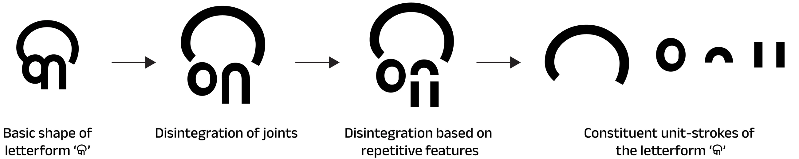
- Unit strokes were independently reviewed by two Odia type designers and finalised through group discussion.
- Strokes were clustered by visual appearance, structural nature and functional role, again validated by the designers.
- Result: twenty-two distinct stroke groupings, the recurring morphological patterns of Odia.
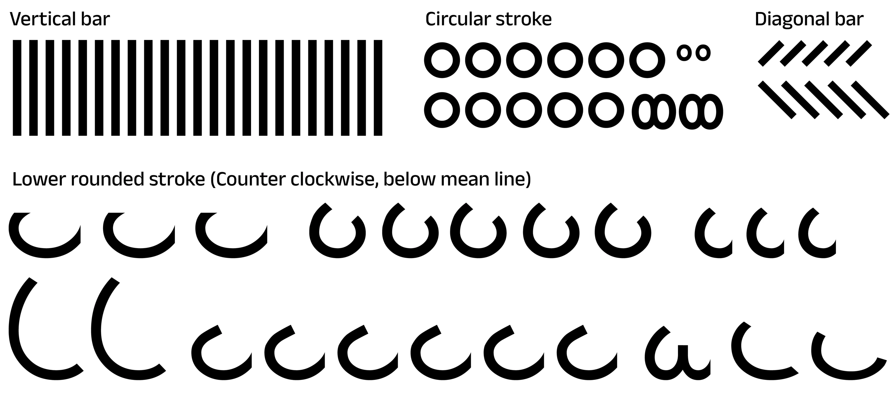
Syntagmatic analysis of Odia letterforms
Syntagmatic analysis studies how elementary units are arranged in sequence or spatial relation and how meaning emerges from these combinations (Chandler, 2002). An Odia letter’s identity emerges from the relative positioning, orientation and connection of its strokes.
Each stroke cluster received an alphanumeric code (S1, S2, S3…). Their spatial arrangement, including corner and tangent joineries, was drawn as relationship models.
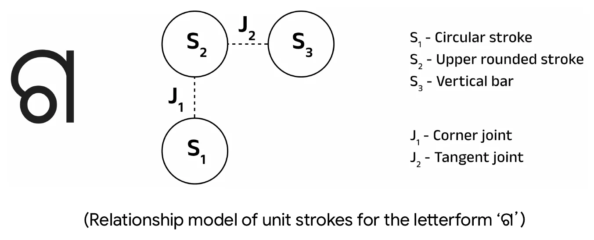
Unit strokes with consistent spatial patterns across characters were defined as anatomical attributes and named by appearance, role and position. As in Latin, Devanagari, Bengali, Arabic and Hebrew, names draw metaphorically on anatomy and familiar objects (AlGhasra, 2020; Chandra, 2019; Dalvi, 2009).
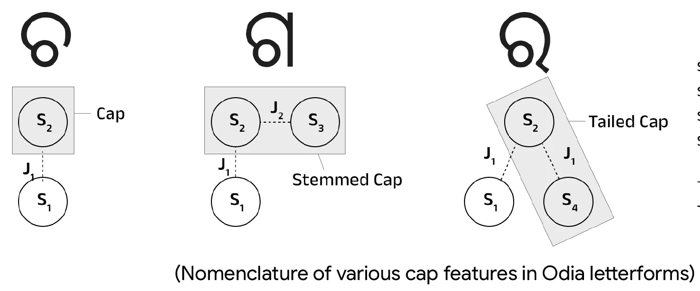
Thirty-five anatomical features of Odia letterforms
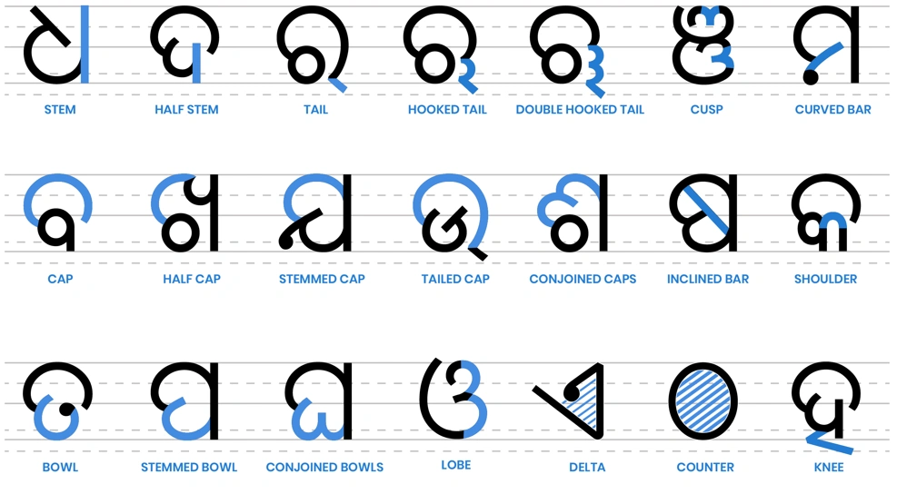
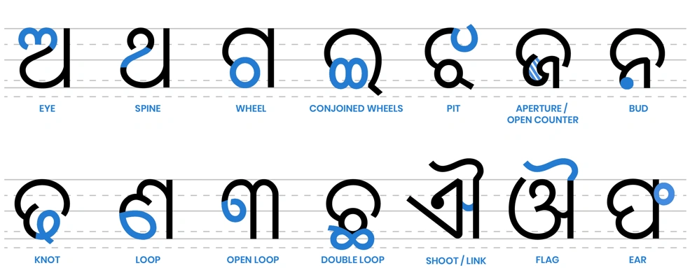
features
Composite structures, combinations of unit strokes recurring across letters, were treated as distinct anatomical units.
J̄uktāksharas merge two or more consonants in partial or full shape, so they inherit the same features; the system also describes conjunct forms.
Each term was translated into Odia with Brislin’s back-translation model (Brislin, 1970; Jones et al., 2001) for use by speakers, educators, calligraphers and type designers.
Paradigmatic analysis of Odia letterforms
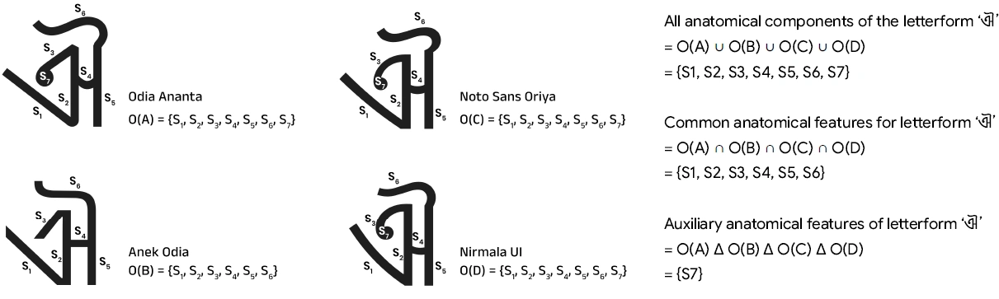
A paradigmatic relation contrasts a unit with alternatives from the same set (Chandler, 2002). Across typefaces, it separates mandatory features that keep a letter recognisable from auxiliary stylistic additions.
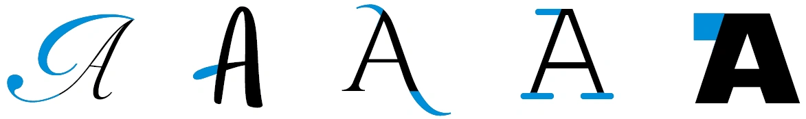
Categorising Odia letters by anatomical parameters
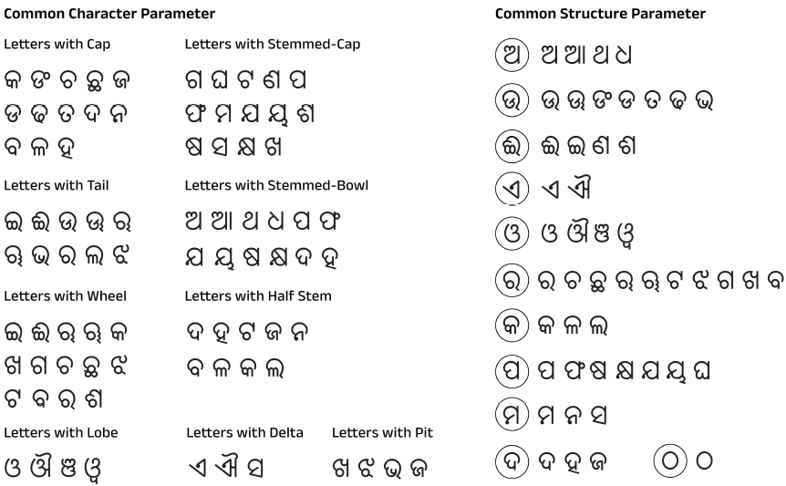
Limitations of the study
Typeface selection
- The analysis considered a limited number of selected typefaces.
- The legibility experiment for selecting typefaces was based on a relatively small sample of 20 Odia readers.
Future studies could include other Odia typefaces and a larger sample of readers for selecting typefaces for analysis.
Expert-informed interpretation
- The identification of anatomical features, their nomenclature and classification were conducted through expert-informed interpretation involving two Odia type designers.
Future studies could involve more type designers and script specialists, and review their agreement through statistical reliability measures to refine and verify the analysis.
Teachers’ evaluative parameters
Addresses the second research question by investigating how teachers evaluate Odia handwriting, and extracting objective typographic legibility parameters from their subjective evaluation practices.
Teachers’ evaluative parametersStudy at a glance
RQ2: What parameters do teachers implicitly use in their subjective evaluation of children’s Odia handwriting?
- Participants
- 103 primary school teachers from 38 schools in Odisha, selected at random; questionnaire pre-tested with 5 teachers
- Data collection
- Odia Handwriting Proficiency Questionnaire (OHPQ): bilingual, closed-ended, 15 items with descriptive images; 5-point scale from No Impact (1) to Very High Impact (5)
- Analysis
- Item means against a criterion of 3; exploratory factor analysis (Bartlett’s test, KMO; PCA as the extraction method with VARIMAX rotation; loadings above 0.4)
Study design
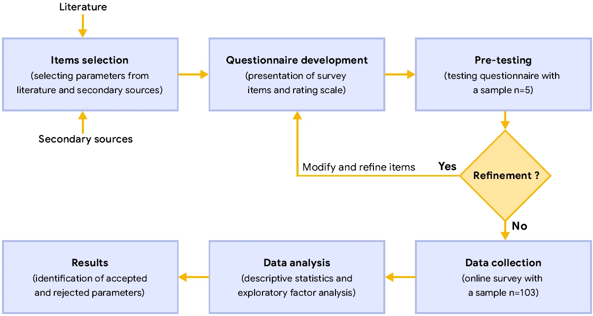
Deriving objective parameters from subjective evaluations needs a large and heterogeneous respondent base to reduce individual bias.
The study adopts the quantitative survey approach used for children’s English handwriting by Jameel et al. (2020).
Item selection for the questionnaire
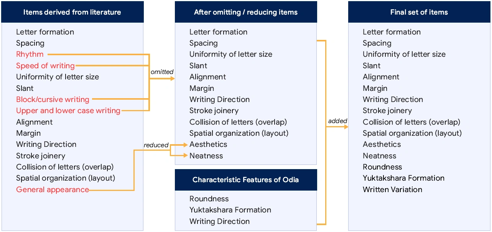
- Parameters were drawn from analytic tools for different scripts (Rosenblum et al., 2003; Feder and Majnemer, 2003).
- Items exclusive to Latin or related to the writing process were omitted.
- The subjective ‘general appearance’ was reduced to aesthetics and neatness.
- Odia-specific features were added: roundness, j̄uktākshara formation and written variation (Tripathy and Dey, 2024; Mohanty, 1986, 1998).
- Writing direction was retained from Odia and Devanagari studies (Tripathy and Dey, 2024; Kshirsagar and Poovaiah, 2015).
The Odia Handwriting Proficiency Questionnaire (OHPQ)
- Closed-ended survey of the fifteen selected items, each with a descriptive image.
- Bilingual design using Brislin’s model of translation (Brislin, 1970).
- 5-point Likert scale from No Impact (1) to Very High Impact (5).
Participants were selected at random and gave consent before rating each parameter.
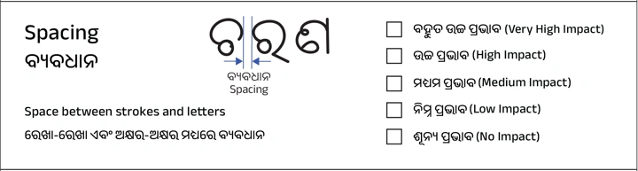
Mean impact of each item
An item was treated as influential for Odia handwriting proficiency if its mean score reached the criterion value of 3. Whiskers show ±1 SD.
Exploratory factor analysis
- EFA followed the procedures and criteria of Singh et al. (2016).
- Suitability was confirmed with Bartlett’s test of sphericity (significant at p = 0.05) and the KMO measure of sampling adequacy.
- PCA, used as the extraction method within this exploratory framework, yielded two factors with eigenvalues greater than 1 and cumulative variance of 65.92% (criterion > 60%).
- VARIMAX rotation sharpened the factor solution; loadings above 0.4 allotted an item to a factor.
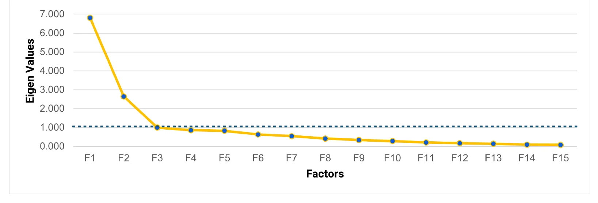
Accepted and rejected parameters
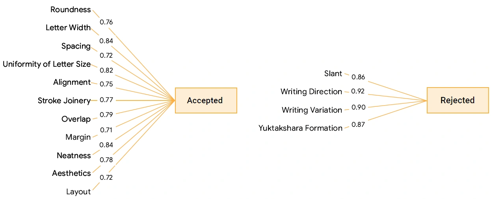
Factor 1 · accepted (11)
Factor 2 · rejected (4)
The split was supported by item means relative to the cut-off score.
Normative features of Odia handwriting
Addresses the third research question by examining the normative features of Odia handwriting, situating legibility within a culturally grounded and perceptually informed context.
Normative features of Odia handwritingStudy at a glance
RQ3: What are the normative features of legibility in Odia handwriting?
- Stage 1 participants
- 62 children in Grades 1–2 (Mage = 5.89, SD = 0.61) from one private and two government Odia-medium schools; 31 adult evaluators fluent in Odia (Mage = 32.38, SD = 12.40)
- Stage 1 data collection
- Dictation and copying tasks of 22 words each; evaluators marked poorly legible letterforms on transparent overlays and commented on the cause
- Stage 1 analysis
- Researcher-led reflexive thematic analysis (Braun and Clarke); external agreement check by three experts (Fleiss’ κ)
- Stage 2 participants
- Six professional Odia type designers (Mage = 26.19, SD = 4.46)
- Stage 2 data collection
- Legible handwritten letterforms from Stage 1 compared with the anatomical models on transparent overlays, followed by group discussion
- Stage 2 analysis
- Consensus: a variation counted as a norm when at least three of five designers agreed
Norms and legibility
- Text legibility depends on the reader’s ability to recognise individual letterforms (Beier, 2009), shaped by culturally specific normative features of a script (Salameh-Matar et al., 2016).
- A norm is a socially constructed, implicitly accepted set of rules or expectations within a cultural context (Christensen et al., 2022). In handwriting, norms are the writing standards, conventions and accepted variations recognised as correct for a script.
- These norms are rarely articulated in classrooms, yet they strongly influence how handwriting is taught, learned and evaluated.
Stage 1
Identification of the typographic attributes that act as normative determinants of legibility.
Stage 2
Permissible variations in handwritten letterforms that are still recognised as legible.
Stage 1: study design and participants
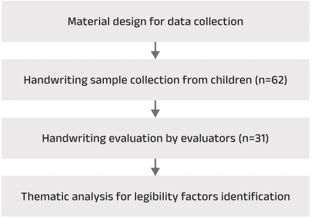
A qualitative simple inquiry design, grounded in Braun and Clarke’s approach (2013, 2021), suited to fields with limited prior understanding and to participant-generated textual data.
- Children
- 62 from Grades 1 and 2 (5–6 years; Mage = 5.89, SD = 0.61) in one private and two government Odia-medium schools; convenience sampling.
- Sample size
- Braun and Clarke recommend 30–50; data collection continued until thematic saturation in evaluators’ comments.
- Inclusion
- Children aged 5–6 who had begun writing letters and words in Odia.
- Exclusion
- Diagnosed physical or mental disabilities; diagnosed learning difficulties (dyslexia, dysgraphia, ADHD, other neurodevelopmental conditions); behavioural concerns flagged by teachers.
- Evaluators
- 31 adults fluent in Odia (Mage = 32.38, SD = 12.40) who studied Odia at least to Grade 10.
Stage 1: writing tasks and sample collection
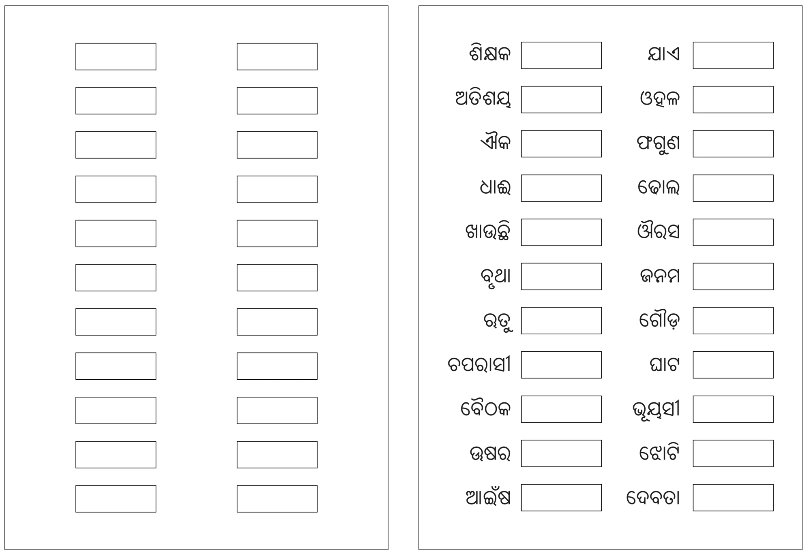
- Single-word tasks matched the developmental stage and routine practice of 5–7-year-olds.
- Two tasks, dictation and copying, each of 22 words chosen with teachers from practice books, together covering every letter and mātrā.
- Dictation words came from everyday spoken Odia; copying words from textbooks and formal writing.
- Class teachers collected samples in regular classrooms after an orientation on standardised administration, including dictation pace, pauses and repetition.
- Words written in rectangular boxes, chosen after two pilot tests: on unruled paper words landed at random positions, and on ruled paper mātrās overlapped adjacent lines. Similar boxes are familiar from Odia textbook exercises.
- Pencils or pens as usual; no time limit (about 15–20 minutes per task). Sheets were coded alphanumerically.
- Participation was voluntary, and teachers were instructed to act on any sign of distress.
Stage 1: evaluation by readers
- Each evaluator assessed two sets of samples using transparent overlay sheets.
- They marked every letterform they perceived as poorly legible and highlighted the specific component responsible.
- Beside each mark, they wrote a brief comment naming the typographic or structural feature that affected legibility.
- All comments were compiled in a spreadsheet and analysed with Braun and Clarke’s reflexive thematic analysis (RTA).
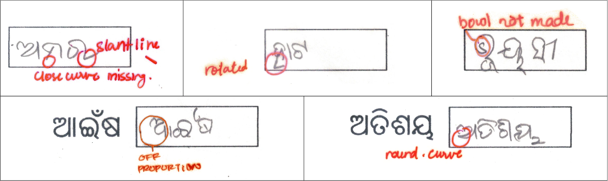
Reflexive thematic analysis: familiarisation and coding
Phase 1. Repeated reading of all comments. Ambiguous comments were cross-checked against the highlighted sample; uninterpretable ones were excluded.
Phase 2. Initial codes generated over three iterative cycles until mutually exclusive.
Coding stayed researcher-led and reflexive. Three experts (two primary teachers, one Odia type designer) did not code independently; they rated their agreement with the researcher’s codes on 30 samples. Fleiss’ κ > 0.75 for all codes (Popping, 2019).
Purpose: to check that the codes are recognisable to other experts, since the themes become OHET parameters that different evaluators must apply consistently. This suits the study’s pragmatist position (O’Connor and Joffe, 2020).
| Code | Description | Example comments |
|---|---|---|
| Curvature | Degree to which a stroke is curved | “Non-rounded stroke” · “The stroke is pointy instead of round” |
| Proportion | Size of a letter-part relative to the whole letterform | “This part is too small” · “The circle is very big” |
| Joinery | How two components join at a point | “The line should touch the vertical bar” · “Joint is not proper” |
| Slant | Inclination of an inclined straight line | “Tail is horizontal” · “The short bar should be more diagonal” |
Excerpt from the full code book
Generating and reviewing themes
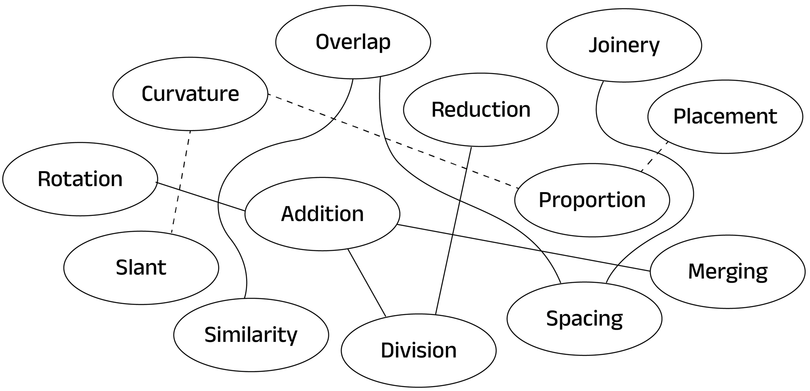
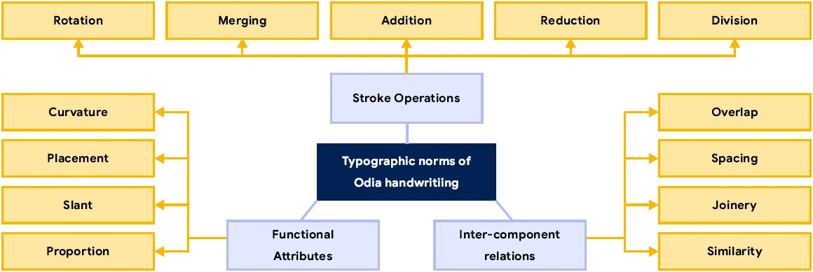
Phase 3 clustered related codes into three themes. Phase 4 reviewed themes against coded data and the full dataset; the external agreement check gave κ > 0.80 for all three themes.
Typographic norms of Odia handwriting legibility
Functional attributes
The geometric characteristics of individual letter components that determine their clarity and recognisability.
Stroke operations
The spatial modifications a writer makes to one or more letter components during handwriting.
Inter-component relations
Relational attributes governing spatial and structural interaction between components or whole letters.
Phase 5: defining themes. Thirteen sub-factors across three normative factors.
How the norms relate to letter recognition
- Functional attributes regulate the geometry of parts and the internal clarity of letters; stroke operations govern structural integrity; inter-component relations organise components within and across letters.
- Functional attributes and stroke operations align with the anatomical features of Odia, and so with the first stage of letter recognition: perceptual extraction of component-level features.
- Inter-component relations were observed more in dictation samples, suggesting a link to children’s conceptual understanding of whole-letter structure, the second stage: matching perceived forms with representations in long-term memory.
Phase 6 (producing the report): the three factors show how structure and function of letter components interact during handwriting production to support or hinder legibility.
Stage 2: normative variations in letterform anatomy
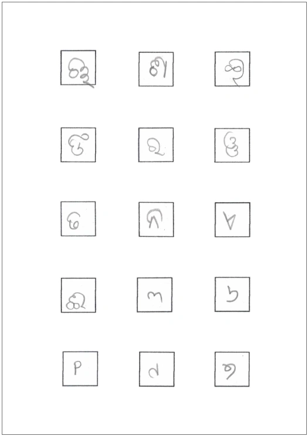
- Stage 1 also produced letterforms that evaluators did not mark, indicating better legibility. These were compared with the typeface-derived anatomy to document permissible variations.
- Six professional type designers, native Odia speakers (Mage = 26.19, SD = 4.46).
- The author and one designer screened for letterforms structurally different from the anatomical models, removing repetitive forms, and compiled them on A4 sheets.
- The other five designers were trained in the anatomical models, then marked diverging components on transparent overlays with comments.
- A group discussion followed. A variation counted as a norm only if at least three of the five designers identified and agreed on it.
Stage 2: accepted handwritten variations
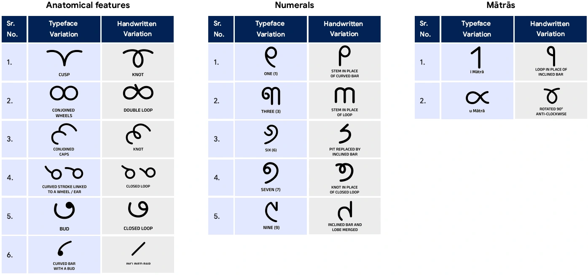
Development and validation of OHET
Integrates the outcomes of the preceding studies into the Odia Handwriting Evaluation Tool (OHET), an analytic instrument for classroom use, presents its initial psychometric validation, and gives a preliminary examination of the instructional effectiveness of OHET-based feedback.
Development and initial validation of OHETStudy at a glance
RQ4: How can a valid and reliable analytic assessment method for children’s Odia handwriting legibility be developed?
- Participants
- 140 children aged 5–7 (Mage = 5.83, SD = 0.74) in Grade 1 (n = 73) and Grade 2 (n = 67) from three Odia-medium schools; 15 teacher evaluators with at least 5 years of experience
- Sampling
- Convenience sampling
- Data collection
- Near-point copying and dictation tasks of 22 words each, rated with the bilingual OHET form
- Analysis
- Initial psychometric validation: content validity (IOC); construct validity (EFA with PCA extraction, and CFA); internal consistency (Cronbach’s α); discriminant validity (HTMT); intra- and inter-rater reliability (ICC); feasibility through content analysis of teacher discussions
Developing the Odia Handwriting Evaluation Tool
OHET synthesises three strands of evidence: the anatomy of Odia letterforms, teachers’ evaluative parameters, and the normative features of legibility derived from shared reader judgements.
Item selection for OHET
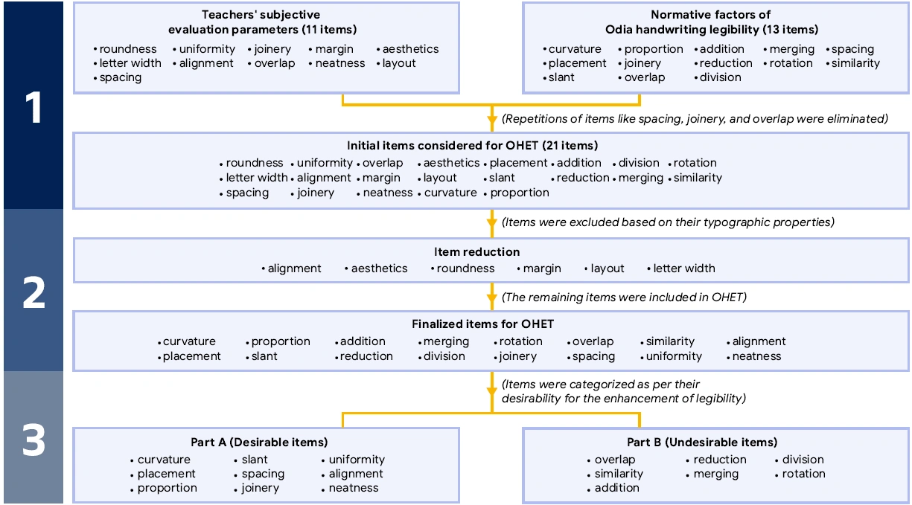
- 11 teacher criteria + 13 normative features; items in both sets (spacing, joinery, overlap) merged, leaving 21 items.
- Five educators reviewed the items; an item stayed only with agreement from at least three of five. Readability and redundant items were removed, leaving 15 items.
- Items categorised by desirability for legibility: Part A (8 desirable) and Part B (7 undesirable).
Item selection rationale
Excluded
- Aesthetics, layout, alignment, margin: readability parameters that concern the arrangement and overall appearance of text on the page. A letter may be correctly formed and readily identifiable regardless of them.
- Roundness, letter width: redundant with curvature and proportion.
Retained or refined
- Uniformity, neatness: operate at both legibility and readability levels and also affect letter identification.
- Spacing: limited to inter-stroke and inter-letter spacing.
- Overlap: kept separate from spacing; in block-style Odia it is an error of unintended letter collision.
- Slant: not accepted by teachers (Chapter 4B), but readers rely on it to recognise letters (Chapter 4C).
The fifteen OHET itemsPart A · desirable items (1–8) · quality scale, Very Good (5) to Very Poor (1)
Curvature
The degree of smoothness, continuity, and proportionality in the curved strokes of letters.
Placement
The position of each anatomical feature within a coherent letter shape.
Proportion
The relative ratio between the height and width of a letter or a stroke within a letter.
Slant
The degree of the tilt or inclination of a letter relative to the vertical axis.
Spacing
The adequacy and consistency of the required space maintained between adjacent strokes or letters.
Joinery
The points where individual strokes within a letter connect or intersect to form a complete and coherent letter shape.
Uniformity
The consistency in the size of letters throughout the writing sample.
Neatness
The absence of smudges, irregular or multiple strokes, and strikethrough lines in handwriting.
The fifteen OHET itemsPart B · undesirable items (9–15) · frequency scale, Never (5) to Always (1)
Overlap
The unintentional spatial interference between adjacent letters or strokes that disrupts the clarity of letterforms.
Similarity
The extent to which the shapes of two or more letters appear alike, making them difficult to distinguish from one another.
Addition
The inclusion of extra or unintended strokes in a letter that are not part of its standard form.
Reduction
The omission or incomplete formation of essential strokes that are necessary to represent a letter accurately.
Merging
The blend of two or more strokes, that should remain distinct, into one stroke.
Division
The separation of a continuous stroke into two or more parts.
Rotation
The deviation in the angular orientation of strokes from their standard position.
Finalised items with illustrative examples
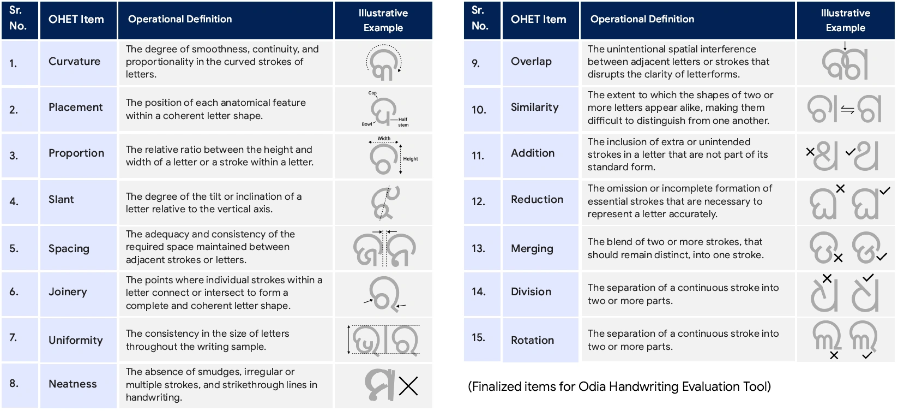
Rating scale and writing tasks
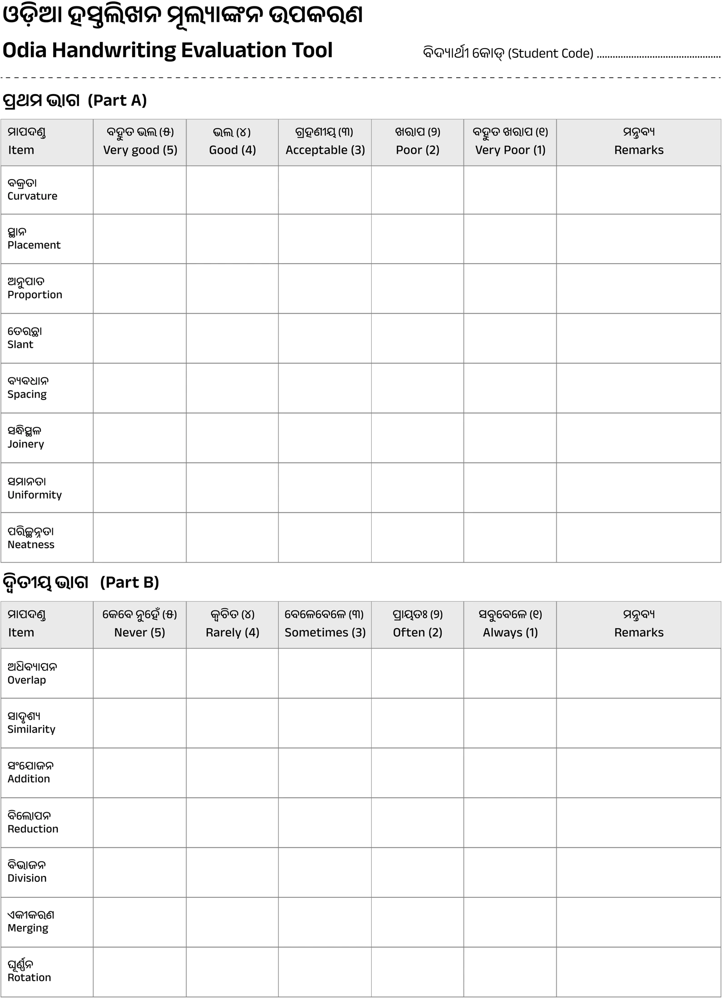
Dual rating scale
Part A uses a quality scale from Very Good (5) to Very Poor (1). Part B uses a frequency scale from Never (5) to Always (1).
Bilingual form
English–Odia versions with conceptual equivalence through Brislin’s framework (Brislin, 1970; Jones et al., 2001).
Two tasks
Near-point copying and dictation, 22 words each, written in rectangular boxes familiar from Odia textbooks; printed targets beside the boxes for copying.
Sample and content validity
Children (Mage = 5.83, SD = 0.74) were native Odia speakers in Grade 1 (n = 73) and Grade 2 (n = 67) across three Odia-medium schools; convenience sampling. Evaluators had at least 5 years of experience teaching Odia handwriting.
Content validity: the extent to which items represent the objective they assess (Haynes et al., 1995; Ohiri et al., 2024). Evaluators rated each item +1, 0 or −1; IOC ≥ 0.50 was satisfactory.
Item-objective congruence (IOC) for each OHET item. All items exceed 0.50.
Construct validity: exploratory factor analysis
- Fourteen evaluators each scored ten of the 140 samples after orientation on items, definitions and scoring.
- EFA on a random 50% subsample (n = 70) per task, with PCA as the extraction method within this exploratory framework (Singh et al., 2016); CFA on the remaining 50%.
- About 4.7 participants per item, marginally below the recommended five; high KMO values and strong loadings support a stable solution (Kyriazos, 2018).
- Copying: Bartlett’s χ² = 1252 (p < .001), KMO = 0.868. Dictation: χ² = 1107 (p < .001), KMO = 0.880.
- Retention: eigenvalue > 1, cumulative variance > 60%, loading ≥ 0.40, at least three items per factor.
- Two factors explained 75.65% (copying) and 74.83% (dictation) of variance.
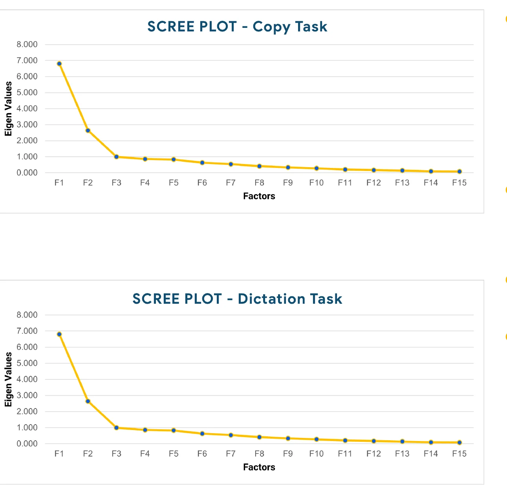
Factor loadings: a two-part structure
Across both tasks, Part A items (curvature to neatness) loaded on Factor 1, and Part B items (overlap to rotation) on Factor 2.
The two-factor solution is consistent with the theoretical distinction between legibility-enhancing attributes and legibility-reducing distortions.
Item construction may partly contribute to it. However, replication across both tasks, CFA on a separate subsample and the low correlation between the parts (HTMT = 0.33) suggest it is not merely a result of construction.
Loadings below 0.4 omitted. n = 70 per task.
Confirmatory factor analysis
| Task (n = 70 each) | χ²/df | RMSEA | TLI | RFI | NFI | CFI |
|---|---|---|---|---|---|---|
| Copying | 1.06 | 0.07 | 0.99 | 0.91 | 0.92 | 0.99 |
| Dictation | 1.01 | 0.05 | 0.97 | 0.92 | 0.94 | 0.98 |
χ²/df reported at p < 0.001; RMSEA at p > 0.05. Indices: root mean square error of approximation (RMSEA), Tucker–Lewis (TLI), relative fit (RFI), normed fit (NFI) and comparative fit (CFI).
Goodness-of-fit indices for both tasks fell within commonly accepted thresholds, giving initial support for the construct validity of OHET. Fit indices from samples of this size should be interpreted with caution.
Internal consistency and discriminant validity
Cronbach’s α (acceptable > 0.70)
| Copying | Dictation | |
|---|---|---|
| All items | 0.89 | 0.88 |
| Factor 1 (Part A) | 0.97 | 0.96 |
| Factor 2 (Part B) | 0.92 | 0.94 |
High internal coherence among items, overall and within each factor (McCrae et al., 2011).
Heterotrait–monotrait ratio
Discriminant validity checks that Part A and Part B measure separate dimensions (Rönkkö and Cho, 2022).
= 0.25 / √(0.78 × 0.70) = 0.33
Well below the recommended threshold of 0.85: the two parts are empirically distinct constructs.
Intra- and inter-rater reliability
Intra-class correlation coefficients (Gwet, 2008). Inter-rater: five raters, 40 samples. Intra-rater: one evaluator re-scored the same 40 samples after 14 days. ICC ≥ 0.60 was satisfactory; ≥ 30 samples and ≥ 3 raters are recommended (Koo and Li, 2016).
Feasibility and score interpretation
Individual discussions with the participating teachers on clarity, practicality, ease of administration and interpretation of scores, analysed by content analysis.
Teachers saw OHET as a ready-to-implement resource and found parameter-specific scores more pedagogically informative than cumulative totals, supporting diagnostic feedback and focused remediation.
Tentative interpretation per item
Based on Indian grading conventions, where about 33–40% is a minimum pass.
Scores of 1–2 (≤ 40%) indicate unsatisfactory performance on a parameter.
Instructional effectiveness of OHETStudy at a glance
- Design
- Two-group pretest–posttest design; two intact classrooms, one per school, randomly allocated to the experimental and control conditions to avoid contamination
- Participants
- 60 Grade 2 children, 30 from each of two Odia-medium schools in Bargarh and Sonepur districts; parental consent and institutional approval
- Intervention
- 60 days of structured, individualised feedback on OHET parameter scores (experimental); existing instruction and feedback (control)
- Data collection
- Pre-test and post-test copying and dictation samples, scored with OHET by five trained teachers not involved in teaching the participants
- Analysis
- Independent-samples t-tests at baseline; paired-samples t-tests within groups (Cohen’s d); gain scores compared between groups with t-tests (Hedges’ g) and ANCOVA; Shapiro–Wilk tests, with Mann–Whitney U and Wilcoxon signed-rank tests as non-parametric checks
Study procedure
Sample size estimated with α = 0.05, 80% power, expected mean difference 1 and variance 2.5 (Rutterford et al., 2015). Allocation at classroom level avoided contamination within a shared classroom.
Baseline equivalence
Descriptive statistics and normality checks (skewness, kurtosis) preceded independent-samples t-tests on pre-test scores.
No OHET item differed significantly between groups at baseline (all p > .05; smallest p = .140 for placement). Mann–Whitney U tests agreed (p = .135 to .938).
Only the experimental-group teacher received OHET scores and an orientation on delivering structured feedback.
Pre-test to post-test change in legibilityMean scores
Paired-samples t-tests within each group, significance at p < .05; Wilcoxon signed-rank tests gave the same pattern.
Within-group effect sizesCohen’s d, pre-test to post-test
Cohen’s d: < 0.20 trivial, 0.20–0.49 small, 0.50–0.79 medium, ≥ 0.80 large (Hedges, 2025).
Between-group comparison of gains
Gain = post-test minus pre-test. Gains compared with independent-samples t-tests (Hedges’ g) and ANCOVA with pre-test scores as covariate.
| Composite gain | Control | Exp. | g |
|---|---|---|---|
| Part A (1–8) | 2.33 | 5.53 | 1.62 |
| Part B (9–15) | 1.63 | 4.90 | 2.32 |
| Total (1–15) | 3.97 | 10.43 | 2.97 |
All composites p < .001. ANCOVA and Mann–Whitney U tests gave a consistent pattern; Mann–Whitney for addition fell at p = .050. Placement and neatness improved in both groups.
Findings of the effectiveness study
- The experimental group improved consistently across all fifteen parameters (all p < .001), with effect sizes from medium to large.
- The control group showed small to lower-medium gains on some parameters; proportion, slant, uniformity, reduction and division did not change significantly.
- Compared directly, the experimental group gained more on 13 of 15 parameters and on every composite score.
- Placement and neatness improved in both groups, perhaps reflecting the emphasis existing instruction already places on them.
The study provides preliminary evidence that parameter-based, systematic feedback grounded in OHET contributes to measurable improvement in children’s Odia handwriting legibility. Confirmation needs multi-site studies with more classrooms.
Limitations of the instructional effectiveness study
- Two classrooms, one per condition: OHET-based feedback is confounded with teacher, school, classroom culture and district.
- Children were treated as independent observations; nesting within classrooms could not be modelled with two clusters.
- Modest sample, limited to Grade 2 children in Odia-medium schools.
- A 60-day intervention; whether gains persist without continued feedback is unknown.
- Fidelity of feedback delivery was not formally monitored or quantified.
- The control group’s routine instruction was not systematically documented.
- Parametric tests were first chosen on skewness and kurtosis; item-level comparisons were not adjusted for multiple testing.
- Hence preliminary evidence: multi-site studies with more classrooms, multilevel models, longer interventions and fidelity monitoring are needed.
Conclusion
Summarises the key contributions of the research, its limitations, and possibilities for future exploration.
Key contributions
- Contributes to Indic typography studies, early childhood education and literacy development, and handwriting legibility research for non-Latin scripts.
- Demonstrates systematic, replicable methods for investigating handwriting legibility in an Indic script.
- Shows the relevance of typographic analysis for the study of handwriting in educational contexts.
- Identifies the anatomical components, grid model and categorisation of Odia letterforms, useful for type design and handwriting instruction.
- Treats the normative attributes of a script as a basis for evaluating handwriting legibility, a novel contribution.
- Develops and initially validates OHET, to the author’s knowledge the first systematic, analytic and initially validated tool for assessing the legibility of Odia handwriting in lower primary children (5–7 years).
- The process followed offers a methodological basis for similar work in other Indic scripts.
- Highlights the continuing relevance of handwriting as a foundation of early childhood education.
Limitations of the researchExploratory and developmental studies
Anatomy of letterforms (RQ1)
- A limited number of selected typefaces was analysed.
- Typefaces were selected with a small sample of 20 readers.
- Features were identified through interpretation by two Odia type designers.
Teachers’ parameters (RQ2)
- Relied only on teachers’ self-reported judgements.
- Limited to fifteen parameters from the literature.
- Two-factor structure from EFA only; CFA could verify it.
- PCA extraction; principal axis factoring recommended (Watkins, 2018).
Normative features (RQ3)
- Norms explored in limited locations.
- Simple inquiry may carry social desirability bias.
- Effect of textbook typography on norms not explored.
- Homogeneous participants restrict generalisability.
Limitations of the researchOHET, its effectiveness, and sampling
OHET validation (RQ4)
- Validated only for children aged 5–7 in Odia-medium schools in Odisha.
- No norm- or criterion-referenced scoring framework yet.
- Subsamples of 70 (about 4.7 per item); CFA fit read with caution.
- PCA extraction; common factor methods could confirm the structure.
Effectiveness study
- One classroom per condition: feedback confounded with teacher and school.
- Nesting could not be modelled with two clusters.
- Modest Grade 2 sample; 60 days without follow-up.
- Fidelity and control instruction not documented.
Sampling across the research
- Several studies relied on convenience sampling.
- Homogeneous samples suit OHET’s intended population (Jager et al., 2017).
- Findings are context-specific and preliminary.
Possibilities for future exploration
Computational assessment
Integrate OHET with AI and machine learning for efficient large-scale evaluation in schools.
Process and product
Examine how process-based aspects of writing influence each OHET legibility parameter.
Other scripts
Adapt the methodological approach to other writing systems, especially Indic scripts, as a basis for script-specific tools.
Learning difficulties
Identify and support children with dysgraphia, dyslexia or ADHD.
Type design and OCR
Inform Odia type design and optical character recognition, with methodological potential for other Indic scripts.
Digital writing
Study handwriting production on tablets and stylus-based interfaces.
Final reflection1 of 2
The question that emerged
- The research began in 2020 with a straightforward goal: understand the factors affecting children’s Odia handwriting legibility and develop a script-specific assessment method.
- Over six years, large language models came to compose, summarise, translate and paraphrase text, and even write code; Gen-AI tools such as ChatGPT, Gemini and Claude became everyday writing tools.
- Speech-to-text and text-to-speech technologies also advanced, and handwriting began to appear increasingly optional.
If automated systems like AI can write with user prompts, is there a requirement for children to learn handwriting anymore?
What handwriting fundamentally represents
- The question rests on a misunderstanding of what handwriting fundamentally represents.
- Seen only as a means of recording or storing information, its sole function becomes the production of text, where Gen-AI systems will eventually outperform humans.
- The studies in this thesis indicate a far deeper educational and cultural function of handwriting than the production of written text.
Final reflection2 of 2
Learning through writing
- Writing letters is a motor, perceptual and cognitive exercise: children not only learn to write, they learn through writing.
- A child recalls the letterform’s structure from long-term memory, turns it into stroke-by-stroke hand-eye coordination, and produces it with a pen or pencil.
- Handwriting is one of the earliest interactions between thinking and making in a child’s life.
From transcription to judgment
- As AI generates more written content, the human role moves from transcription towards evaluating and refining AI-generated text.
- This needs an understanding of how written language is structured, which handwriting helps build.
Academic integrity and direct experience
- Reliance on AI for assignments and examinations raises concerns about academic integrity (Cotton et al., 2024).
- Australia’s Group of Eight universities increased pen and paper examinations (Cassidy, 2023); US universities report more handwritten examination booklets (Zimmerman, 2026); Danish upper-secondary students must orally defend work done at home (Carnevali, 2026).
- Jonathan Haidt’s The Anxious Generation (Haidt, 2024) calls for more in-person, non-digital experiences for children. Handwriting remains a direct, physical experience that is difficult to replicate digitally.
Responses to reviewers’ comments
Responses to the reviewers’ key methodological and conceptual comments: those addressed through revisions in the thesis, and those answered with justification.
Key comments and responsesStructure, theoretical position and method
| # | Comment | Response |
|---|---|---|
| 1 | Each hypothesis (pp. 80–105) should be discussed separately: stated in bold as a subsection title, then its rationale, the gaps it fills, how it was examined and its conclusions. | Revised. Each working hypothesis now has its own subsection (3.2.1–3.2.3) titled with the hypothesis, covering its rationale, the gaps it addresses, how it was examined and its conclusion. Section 3.2 is retitled “Exploratory grounding studies to examine the practical significance of research gaps”. |
| 2 | The passage on the positivist stance (p. 112) seems off topic and could be cut, as many other stances are not mentioned. | Retained with justification: the quantitative components could suggest a positivist orientation, and the passage explains why legibility is treated as a perceptual and social construct. Critical inquiry was removed, and a sentence notes that other perspectives fall outside the study’s focus. |
| 3 | In Saussure the sound image is the signifier, so why is the phonemic value of a letterform treated as the signified (p. 132)? | Justified with an example: Saussure treated writing as a separate system of signs that represents speech. Within it, the letterform is the signifier and the phonemic unit it stands for is the signified (Chandler, 1994). |
| 4 | Participants’ gender is reported (pp. 136, 223) but not addressed, and the unequal split may suggest a flaw in data gathering. | Revised. Gender was not a variable in any study, so gender figures were removed from all participant descriptions. |
| 5 | The rectangular response boxes (p. 190) may have influenced children’s writing. Was this considered, and are such boxes familiar to children? | Justified: the format was chosen after two pilot tests. On unruled paper words landed at random positions; on ruled paper mātrās overlapped adjacent lines. Similar boxes are familiar from Odia textbook exercises. |
Key comments and responsesAnalysis, validation, effectiveness and scope
| # | Comment | Response |
|---|---|---|
| 6 | H1–H3 should not be presented as hypothesis testing in a strong sense; some claims are stronger than the data allow. | Agreed. H1–H3 are presented as working hypotheses guiding exploratory inquiry; null hypotheses were removed, findings are described as teachers’ perceptions and exploratory evidence, and each conclusion states its limits. |
| 7 | Reflexive thematic analysis sits uneasily with inter-coder reliability. | Justified: coding was researcher-led and reflexive; experts rated agreement with the researcher’s codes to check recognisability for OHET parameters, consistent with a pragmatist position (O’Connor and Joffe, 2020). |
| 8 | The data support “initial” or “preliminary” validation, not a fully validated, standardised tool. | Agreed. OHET is described as initially validated, and “standardised” was removed. |
| 9 | Two classrooms confound OHET with teacher, school and context; between-group change was not tested; normality and nesting. | Revised. Redescribed as a two-group pretest–posttest design; gains compared between groups (t-tests, Hedges’ g, ANCOVA); non-parametric checks added; confounding and nesting stated as limitations. |
| 10 | The thesis is very extensive; the introduction covers the history of design, visual communication, writing, typeface and typography, which may appear too broad for the research problem. Some sections could be more concise. | Justified: as a design research study, it was important first to situate the work in that domain; Section 1.1 establishes handwriting as a visual product that can be examined through typographic attributes. Key findings recur intentionally, because each interlinked study builds on the previous ones towards OHET, so the structure was retained. |
Key comments and responsesStrengths noted by the reviewers
| # | Strength | Comment |
|---|---|---|
| 1 | Articulation of design, typography and education | Handwriting is positioned as an object of design research rather than merely a pedagogical or motor-related issue. Treating it as a visual product analysed through typographic attributes is one of the thesis’s most valuable conceptual contributions. |
| 2 | Anatomy of Odia letterforms | Chapter 4A is one of the most solid sections. The semiotic analysis (structural grid, unit strokes, syntactic, syntagmatic and paradigmatic analyses, 35 anatomical components, mandatory and auxiliary features) is a contribution to Odia typography independent of OHET. |
| 3 | Integration of multiple sources of evidence | OHET is built from three sources: the structural analysis of letters, teachers’ subjective criteria, and the prescriptive norms of readers and specialists, a sound triangulation strategy. |
| 4 | Practical orientation | The thesis has a clear applied outcome, the Odia Handwriting Evaluation Tool (OHET), an important strength in a doctorate in Design. |
| 5 | Thesis presentation | The thesis is well written, clear and carefully formatted throughout, showing a great deal of care in writing and reviewing. |
Publications and presentations
Journal publications, conference proceedings and presentations arising from this research, and selected references.
Peer-reviewed publications
Journal publications
| # | Publication | Quartile | IF | Indexing |
|---|---|---|---|---|
| 1 | Tripathy, A. K., & Dey, S. (2026). Development and validation of the Odia handwriting evaluation tool (OHET) for lower primary school children. Reading and Writing. doi.org/10.1007/s11145-026-10780-x | Q1 | 2.2 | Scopus, Google Scholar, ProQuest, SSCI |
| 2 | Tripathy, A. K., & Dey, S. (2026). Identification of typographic factors of lower primary school children’s handwriting legibility in the Odia script. Journal of Occupational Therapy, Schools, & Early Intervention, 1–18. doi.org/10.1080/19411243.2026.2629366 | Q2 | 1.1 | Scopus, EBSCOhost, ESCI, CINAHL Plus |
| 3 | Tripathy, A. K., & Dey, S. (2026). A semiotic analysis of the anatomy of Odia letterforms. Visual Communication Quarterly, 33(3), 298–315. doi.org/10.1080/15551393.2026.2669476 | Q2 | 0.5 | Scopus, ESCI, Web of Science, ProQuest |
| 4 | Tripathy, A. K., & Dey, S. (2024). Effects of Odia handwriting education on children’s letterform comprehension. The International Journal of Design Education, 18(2), 125–147. doi.org/10.18848/2325-128x/cgp/v18i02/125-147 | Q1 | 0.7 | Scopus, EBSCO, ProQuest, ARC, Cabell’s |
Conference proceedings
| # | Publication |
|---|---|
| 1 | Tripathy, A. K., & Dey, S. (2025). Understanding teachers’ perceptions of legibility and readability parameters for Odia handwriting instruction and assessment. In A. Chakrabarti, V. Singh, P. S. Onkar & M. Shahid (Eds.), Responsible and Resilient Design for Society, Volume 2. ICoRD 2025. Lecture Notes in Mechanical Engineering (pp. 55–67). Springer. doi.org/10.1007/978-981-96-6511-2_5 |
Conference presentations
| Presentation | Conference | Location and date |
|---|---|---|
| Development and validation of the Odia Handwriting Evaluation Tool (OHET) for lower primary school children | Paris Conference on Education 2025 | Sorbonne University, Paris · 10–14 June 2025 |
| Investigating the factors affecting primary school children’s handwriting legibility in the Odia script | European Conference on Language Learning 2024 | University College London · 11–15 July 2024 |
| Effects of Odia handwriting education on children’s letterform comprehension | 17th Int. Conference on Design Principles & Practices 2023 | Polytechnic Institute of Lisbon · 29–31 March 2023 |
| Employing typographic concepts to evaluate children’s Odia handwriting | Design Doctoral Consortium 2023 | IDC School of Design, IIT Bombay · 4–5 March 2023 |